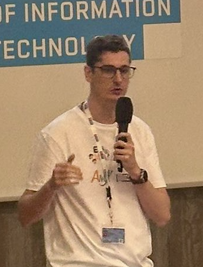

Hi there, I’m Sergio! 👋😊
AI researcher advancing speech recognition and language understanding at Idiap 🇨🇭🏔️
五つの「気」：勇気・元気・本気・やる気・根気 🌱
Curious about what I do? If we were chatting over coffee ☕ (or mate 🧉) one afternoon, and you ask me, I could say something like:
I’m part of Idiap Research Institute’s Speech & Audio Processing group. From a little valley in the heart of the Swiss Alps 🇨🇭🏔️, Idiap has been a leading institute in AI and ML for decades (fun fact: it’s where PyTorch was born! 🚀). My research sits mainly at the intersection of speech recognition and NLP, stress‑testing and improving the architecture of LLM‑based end‑to‑end ASRs (coupling speech encoders with LLMs) and working on dialog modeling & conversational structure induction for task-oriented dialogues.
For example, in Dialog2Flow we introduced action‑driven sentence embeddings that turn multi‑turn conversations into explicit workflow graphs. We unified task‑oriented dialog datasets and pre‑train embeddings that cluster utterances jointly by semantics and communicative intent. In this work, I also introduced a new supervised contrastive loss for large, fine‑grained label spaces — if you’re curious, the code, a ready-to-use model, and the dataset are available for playing around 🛠️.
Before LLMs became mainstream, I worked on interpretable text classification. During my PhD, I developed the SS3 model, a set of equations designed to learn important textual features as it reads. This model achieved, among all participating teams, the best result in the CLEF eRisk challenge for three consecutive years (2019–2021) and led to the creation of the open-source PySS3 library — if you’re interested, there’s an online demo 🔍 too.
As an AI researcher, I’ve published and reviewed for top-tier NLP and speech venues, including ACL, EMNLP, INTERSPEECH, and ICASSP. You can check out the full list of my publications on Google Scholar.
- Johns Hopkins University's JSALT 2023 & 2025: contributed to the Automatic design of conversational models and gave lectures on, and contributed to, synthetic dialog generation with LLMs as a senior researcher member — you can also see me presenting on the final day 🙈 on YouTube 🎥.
- Winner 😎 of the ICC 2024 AI Hackathon: call-center workflow assistant 🧑💻.
About me and my background? I’m an Argentinian 🇦🇷🧉 who's been coding since childhood (20 plus years of experience now! 👶💻), and curiosity always kept pulling me deeper and deeper. Here are a few projects I invested a lot of work in the past and I’m especially proud of:
- T‑World: an open-source and fully web-based 3D platform for AI research and education with agents. It’s built with native JavaScript (no frameworks) and runs entirely in the browser. You can code agents in any language, and I’ve included examples like Q-Learning-based reinforcement learning agents and A*-based problem solvers. You can even play against them 🎮! Check it out — click on "Run T-World!" at the bottom and run the first environment of the list 😎
-
As a Computer Science student at UNSL, I also created, from scratch, a simple C-inspired programming language for people learning to code. I designed its context-free grammar, wrote a recursive-descent parser in C++, and implemented a stack-based virtual processor as its interpreter and the compiler logic for it. Later, I explored compiling directly to machine code and built a C library to generate valid Windows
.exe(PE) files from user-provided x86 instructions — I paused its integration to the compiler after switching my professional life fully towards AI research 😅 - For fun, curiosity and learning, I’ve loved to implement many things from scratch. For instance, communication protocols (HTTP, TCP, UDP, WebSocket, etc.) based on their RFCs. For example, I coded a custom WebSocket proxy server in C to connect external agent programs to the in-browser 3D simulation in T‑World. I also implemented small physics engines, the math behind 3D and 2D rendering, and simple-reflex intelligent agents with, sometimes, unique emergent behaviors 🙈
On the side, in the past I’ve ventured into 2D and 3D animation (some pieces even aired on MTV Latinoamérica 📺), ethical hacking, and teaching. I also enjoy playing classical guitar 🎵 and learning Japanese 🇯🇵 — at one point, I reached the milestone of reading around 1000 kanji!
If you’d like to connect, feel free to reach out at sergio.burdisso@gmail.com ✉️. I’m friendly, passionate, and open-minded, so don't hesitate 💪. Alternatively, you can connect with me on LinkedIn.